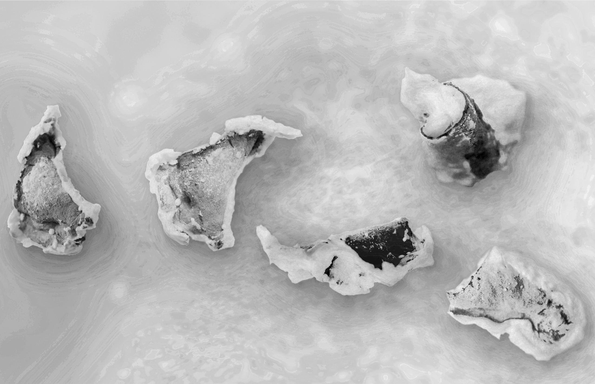
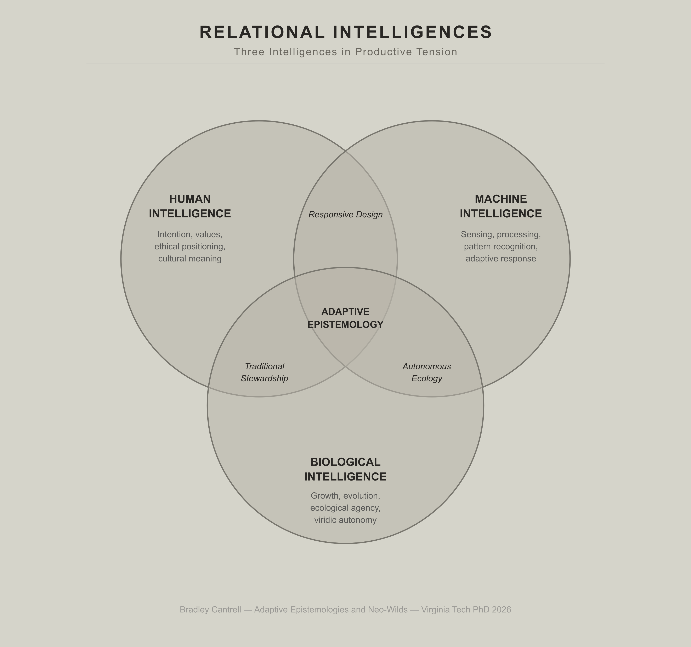
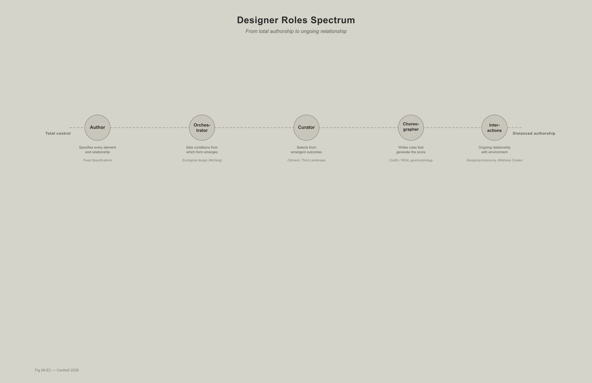

The fundamental challenge in applying artificial intelligence to landscape architecture centers on the fact that current definitions of AI do not fit within systemic landscape frameworks (Zhang 2018; Cantrell, Zhang, and Liu 2020). Rather than focusing on complex ecological relationships, general definitions of artificial intelligence tend to emphasize the intelligence of individual entities and overlook the emergent intelligence of assemblages of human and non-human agents.
The challenges can be articulated in three areas, anthropocentrism, individualism, and means-end reasoning (Cantrell, Zhang, and Liu 2020). First, AI research conceives machine intelligence as modeling and replicating human intelligence, reinforcing human-centric values. Yet different species, entities, systems, and assemblages relate to their environments very differently. Second, individualistic lenses overlook the distributive quality of intelligence, concepts like hive intelligence or swarm intelligence speak to capacities existing only among assemblages of entities, not reducible to individuals. Third, AI research cannot bypass the inherent means-end reasoning deeply rooted in Western thinking, envisaging an ideal form as model, then pursuing it as goal (telos) through planned interventions. This paradigm conflicts with landscape architecture\'s embrace of emergence, open-endedness, and non-equilibrium thinking (Cantrell, Zhang, and Liu forthcoming; Jullien 2004).
Distributing Intelligence Across Agents
Traditional design discourse positions the human designer as singular author, the creative intelligence that conceives, composes, and implements landscapes according to aesthetic, functional, or ecological intentions (Meyer 2008; Spirn 1984). This framework, inherited from Beaux-Arts traditions and reinforced through professional credentialing systems, assumes a hierarchy of intelligence in which human rationality sits at the apex, directing lesser agents, plants, animals, materials, and machines, toward predetermined outcomes (Latour 2004; Haraway 2016).
The question \"what is intelligence?\" has bedeviled AI research since Alan Turing\'s foundational 1950 paper. Turing famously sidestepped definitional debates by proposing the \"imitation game\", if a machine\'s responses are indistinguishable from a human\'s, we should accept it as intelligent (Turing 1950). This operational definition reveals the anthropocentrism Cantrell, Zhang, and Liu identify, the test assumes human-like conversation is intelligence\'s hallmark. But Rodney Brooks challenged this approach in \"Intelligence Without Representation,\" arguing that intelligence emerges from embodied interaction with environments rather than from abstract reasoning about internal representations (Brooks 1991). Brooks demonstrated that simple robots responding directly to sensory inputs could navigate complex environments more robustly than robots planning trajectories using internal world models. Intelligence, Brooks argued, is not computation over symbols but dynamic coupling between perception and action.
This embodied, situated view aligns more closely with how organisms operate in landscapes. A marsh plant \"intelligently\" allocates resources not by constructing internal models of soil chemistry but by responding directly to nutrient concentrations through biochemical feedback. A marsh management algorithm might operate more like Brooks\' robots, sensing conditions, triggering responses, adjusting based on outcomes, without attempting to maintain complete world models that are inevitably outdated and inaccurate (Beven 2006; Willems 2008).
Plants exhibit sophisticated decision-making about resource allocation, growth patterns, and chemical signaling that constitutes vegetal intelligence, even if operating through biochemical rather than neural mechanisms (Marder 2013; Trewavas 2003). Microbial communities demonstrate collective problem-solving characterized as swarm intelligence (Parsek and Greenberg 2005). Materials possess what Jane Bennett terms \"vibrant matter,\" agencies arising from their physical and chemical properties that shape outcomes in ways that resist or accommodate human intentions (Bennett 2010). Machine learning algorithms exhibit pattern recognition, prediction, and optimization exceeding human cognitive capacity in specific domains, even as they remain dependent on human-defined objectives and training data (Olden, Lawler, and Poff 2008).
Shane Legg and Marcus Hutter surveyed definitions of intelligence, identifying a common thread, they always involve interaction of an agent with its environment (Legg and Hutter 2007a). Based on this observation, they proposed \"universal intelligence\" as a measure of an agent\'s ability to achieve goals in a wide range of environments (Legg and Hutter 2007b). This agent-environment framework is essentially a cybernetic model aligning with systems thinking in contemporary landscape practice (Cantrell and Zhang 2018). Anthropocentrism unwittingly imposes human standards on non-human agents when considering what actions constitute intelligent behavior. This human-centered view prevents recognition that a tree is intelligent because trees cannot move or think in ways humans do. Yet non-humans relate to their environment very differently, a bat \"sees\" through ultrasonic waves, a dog through scent, a computer through numerical processing (Cantrell and Zhang 2018). As Thomas Nagel famously asked, \"What is it like to be a bat?\" (Nagel 1974) we cannot fully comprehend non-human modes of cognition.
Individualism assumes intelligence resides in individual agents, overlooking group intelligence emerging from interactions among individuals forming assemblages, intelligence existing only in the assemblage and irreducible to any individual component (DeLanda 2016). Consider, do we measure the intelligence of an ant or a colony of ants? An individual ant cannot intelligently impact environments at meaningful scales, whereas a colony acts intelligently to construct underground ecosystems, what we call hive intelligence. More importantly, assemblages can consist of heterogeneous components, humans and machines. Through socio-cultural niche construction, human beings working with technical machines form ever-expanding socio-technical assemblages intelligent enough to persist for millennia (Ellis 2015; Cantrell and Zhang 2018).
The argument developed in this chapter is that designing neo-wild landscapes at territorial scales requires embracing distributed intelligence and recognizing that intelligence is not the exclusive property of humans but is distributed across multiple agents (biological, computational, material) with each contributing distinct modes of sensing, processing, and responding to environmental conditions (Gabrys 2016; Bryant 2014; Haraway 2016). By removing anthropocentrism from the agent-environment framework, we can identify three types of intelligence in landscapes, material intelligence, biophysical intelligence (human, animal, and plant intelligences), and machine intelligence (Cantrell and Zhang 2018). Machine intelligence thus forms a \"third intelligence\" that can be compared to material and biophysical intelligences rather than privileged as superior or positioned as a replacement for human cognition.
By removing individualism from intelligence definitions, new possibilities emerge for developing AI systems in landscape architecture. AI is not simply a tool for automation and optimization but an active participant that co-evolves with other forms of intelligence in designing and managing landscapes (Cantrell, Liu, and Zhang 2018; Zhang 2017). The designer\'s role shifts from singular author to orchestrator of intelligences, one who constructs infrastructural conditions, establishes communication protocols, and facilitates interactions among diverse agents, but who does not and cannot dictate the specific outcomes that emerge from these interactions (Cantrell, Ellis, and Martin 2017; Corner 1999). This distributed model is not merely theoretical gesture but practical necessity for managing landscapes under conditions of deep uncertainty, rapid environmental change, and scalar complexity that exceed any individual\'s capacity to comprehend fully (Gunderson and Holling 2002; Folke et al. 2010).
Algorithmic Cultivation (2019) made the tripartite structure of co-authorship visceral. What the plants did with the pruning, branching angles, leaf size, the distribution of new growth, was the work\'s actual content. Not the robot\'s trajectories, not the data feeds, not the installation\'s conceptual logic but the plant\'s response. Human intention set the parameters and machine cognition executed the cuts with biological agency authoring the form. The installation\'s significance for this chapter is not the elegance of that triangle but its asymmetry. The plant had no knowledge of the data feeds that drove the shearing. The machine had no knowledge of what growth responses the cuts would provoke. Only the human operator held the whole system in view and even they could not predict what the plant would do. Co-authorship in this framework does not mean equal contribution. It means constitutive contribution across radical difference and each agent\'s actions are necessary to what emerges, yet none controls it.
The robot posed questions through pruning. The plant answered through growth. Neither the question nor the answer was predetermined. The co-authorship was genuine, the plant\'s response to one pruning cycle established the conditions to which the subsequent cycle responded. The designed system did not control the biological agency, it enrolled it. And the biological agency did not simply comply, it participated, generating forms impossible through manual cultivation, responding to cuts in ways the shearing protocols could not anticipate.
The installation was designed to operate for a year. Technical difficulties limited it to weeks, revealing, through failure, precisely what the Third Intelligence framework demands, that sustaining genuine co-authorship between human intention, machine cognition, and biological agency is harder than sustaining optimization systems in which the biological substrate is simply performing a specified role. The difficulty scaled with the degree to which the plant was treated as a genuine author rather than a medium.
Forms of Intelligence in Landscape Systems
An analysis of cybernetics and landscape architecture provides crucial historical context for understanding distributed intelligence in neo-wilds (Zhang 2025). Zhang identifies three waves of cybernetics research that mirror landscape architecture\'s evolving relationship with control and uncertainty. The first-wave cybernetics (1940s-1960s) emphasized homeostasis and entropy reduction through negative feedback, exemplified by Ian McHarg\'s deterministic ecological planning. A second-wave cybernetics (1970s-1980s) problematized authorship through autopoiesis and operational closure, seen in Lawrence Halprin\'s scoring systems. And a third-wave cybernetics (1990s-2000s) embraced emergence and posthumanist ecology, exemplified by Field Operations\' \"Emergent Ecologies\" proposal that rejected fixed organizational frameworks (Zhang 2025; Hayles 1999).
Contemporary neo-wild landscapes operate within this third wave, where uncertainty becomes \"a source of emergence\" rather than a problem to eliminate (Zhang 2025, 169). This requires recognizing multiple forms of intelligence operating simultaneously in landscape systems.
Biological Intelligence: Organisms as Decision-Makers
Biological organisms exhibit intelligence through their capacity to sense environmental conditions, process information, and adjust behaviors or physiological states in response. This intelligence operates across scales from cellular metabolism to individual behavior to collective dynamics, manifesting in forms that differ radically from human cognition but are nonetheless sophisticated, adaptive, and consequential (Trewavas 2003; Camazine et al. 2001).
Plant intelligence provides a particularly instructive example because plants challenge anthropocentric assumptions. Lacking brains, nervous systems, or mobility, plants nonetheless demonstrate capacities for memory, learning, communication, and decision-making (Marder 2013; Trewavas 2003). A marsh grass plant \"decides\" where to allocate resources based on available light, nutrient concentrations, salinity stress, and competition from neighbors. These decisions are not conscious in the human sense but are computations performed through biochemical networks that integrate multiple signals and produce adaptive responses.
Plants also communicate through chemical signaling. Root exudates release compounds that inhibit competitors, attract beneficial microbes, or signal nutrient availability to mycorrhizal fungi. Aboveground, plants emit volatile organic compounds in response to herbivory that can induce defensive responses in neighboring plants. These communications constitute distributed cognition in which information is shared across individuals, enabling coordinated responses to environmental stresses impossible for isolated plants (Baluška and Mancuso 2009).
For designers working with neo-wild landscapes, acknowledging biological intelligence means recognizing that organisms are not passive materials to be arranged but active agents whose behaviors will shape landscape trajectories in ways that cannot be fully predicted (Cantrell, Ellis, and Martin 2017). The \"design\" is not the initial configuration but the process through which organisms self-organize within the constraints and opportunities that infrastructures provide (Felson and Pickett 2005).
Material Intelligence: Agency of Soils, Water, and Sediment
Materials possess agencies arising from their physical and chemical properties, what Bennett terms \"thing-power\" or \"vibrant matter\" (Bennett 2010). These agencies are not intentional in the way organismal behaviors might be characterized, but they are nonetheless consequential, materials do things, produce effects, resist or facilitate human intentions, and participate in shaping landscape trajectories through their intrinsic properties (Barad 2007; Pickering 1995).
Sediment is not inert substrate awaiting placement but a dynamic material whose behavior emerges from interactions among grain size, mineralogy, organic content, flow velocity, and biological activity (Paola et al. 2011). The sorting of sediment by grain size is not something humans design but a physical process occurring automatically based on hydrodynamic conditions. Designers can influence where and when sediment deposits by adjusting flow regimes, but they cannot dictate the precise grain-size distributions or spatial patterns that result.
Once deposited, sediment continues to exhibit agency. It consolidates under its own weight, interacts chemically with pore water, provides substrate for plant colonization. It responds to wave action and tidal currents, eroding from some locations and accreting in others. These material agencies mean that a landscape\'s morphology is not fixed at construction but evolves through ongoing negotiations between imposed infrastructures and intrinsic material properties (Bennett 2010; Barad 2007).
Recognizing material intelligence means designing with rather than against material properties and trajectories. A sediment management strategy that attempts to force fine clays to deposit in high-energy environments will fail because material physics do not permit it, a strategy that works with natural sorting processes, delivering sediment to low-energy zones where clays can settle, will succeed with less energy expenditure (Paola et al. 2011).
Machine Intelligence: Algorithmic Sensing, Learning, and Decision-Support
Machine intelligence in neo-wild landscapes takes multiple forms, real-time sensing and data processing, pattern recognition through machine learning, predictive modeling, and automated control of responsive infrastructures (Cantrell, Liu, and Zhang 2018; Olden, Lawler, and Poff 2008). These computational intelligences differ from biological and material agencies in being explicitly programmed or trained by humans, yet they exhibit capacities (processing speed, data storage, pattern detection across high-dimensional datasets) that far exceed human cognitive abilities in specific domains.
The agent-environment framework makes clear that discussions of AI must be specific and situated, when discussing intelligence, it is necessary to clarify which agents are operating in which environments toward what goals (Cantrell, Liu, and Zhang 2018). A machine learning algorithm designed to optimize sediment delivery operates with different agents (gates, pumps, sensors), in different environments (tidal marsh, river delta), toward different goals (land-building, habitat creation, flood protection) than an algorithm managing urban stormwater or predicting wildfire risk.
Sensor networks constitute distributed machine sensing, arrays of instruments continuously monitoring environmental variables and transmitting data to processing systems (Gabrys 2016; Rundel et al. 2009). Each sensor operates according to its physical principles, an optical turbidity sensor detects suspended particles through light scattering, a conductivity sensor measures salinity through electrical resistance and these detection mechanisms impose particular ways of \"knowing\" the environment. Sensors see the world through narrow bandwidths optimized for specific variables, missing multi-sensory complexity but providing temporal and spatial coverage impossible for biological observers.
Machine learning algorithms trained on sensor data identify correlations and patterns informing management decisions (Cutler et al. 2007). A random forest classifier might predict which marsh areas are most likely to support successful vegetation establishment. A neural network might forecast sediment deposition rates under different diversion scenarios. These predictions are probabilistic rather than deterministic, machine learning does not eliminate uncertainty but quantifies it, yet they provide decision-support that improves adaptive management by revealing relationships among variables difficult to detect through human observation alone.
Critically, machine intelligence in neo-wilds is not autonomous in the sense of operating independently of human oversight. Algorithms require training data reflecting human decisions about what to measure. Models require calibration involving human judgment about acceptable error rates. Control systems require threshold values and decision rules encoding human priorities about what conditions should trigger interventions (Cantrell, Ellis, and Martin 2017). Machine intelligence augments rather than replaces human intelligence, extending perceptual reach and analytical capacity while remaining embedded within socio-technical systems where humans set objectives and interpret results.
Andy Clark and David Chalmers extend this perspective to human cognition in \"The Extended Mind,\" arguing that cognitive processes are not confined to brains but extend into bodies, tools, and environments (Clark and Chalmers 1998). Applied to neo-wilds, computational management systems are components of extended cognitive systems encompassing humans, algorithms, sensors, organisms, and materials. The \"intelligence\" of neo-wild management resides not in algorithms alone, nor in human managers alone, but in the coupled system, humans establish objectives, algorithms detect patterns, sensors provide data, vegetation responds to conditions, sediment deposits according to flows, and all these processes feed back into subsequent decisions (Cantrell, Ellis, and Martin 2017; Gabrys 2016). The system thinks, learns, and adapts through distributed processing, an extended intelligence that no single component possesses in isolation (Zhang 2025).
Yet the means-end reasoning inherent in most AI systems poses challenges for landscape architecture\'s embrace of emergence (Cantrell, Zhang, and Liu 2020). Western philosophical tradition envisions an ideal form (eidos) as model, which serves as goal (telos), which calls for actions. With eyes fixed on conceived models projected onto the world, interventions are planned to give form to reality (Jullien 2004). This reasoning differentiates theory from practice, ties effectiveness to measurable outcomes, and frames unexpected circumstances as uncertainty undermining plans. Contemporary landscape design theory has bypassed equilibrium and deterministic control paradigms, embracing emergence and open-ended epistemology. This paradigmatic incommensurability poses challenges for incorporating AI. One response is treating AI not as means to construct predictive models but as prototypes, experiments inspiring possibilities, generating knowledge through ongoing interaction with biophysical and material processes rather than optimizing toward fixed goals.
Zhang proposes understanding machine intelligence through a framework of co-productive intelligence, intelligence emerging not from individual agents but through interactions among assemblages (Zhang 2025). This framework identifies three types, adversarial intelligence describes competition in long-term co-evolution where complex behaviors emerge. Intelligence in symbiosis manifests as structural coupling where systems synchronize inputs and outputs to exchange effects. Intelligence in loose coupling describes flexible relationships producing synergies when goals accidentally match system operations, as in Sougwen Chung\'s \"Drawing Operations\" where system latencies and robotic \"errors\" become creative opportunities rather than failures to eliminate (Zhang 2025; Chung 2015).
This framework reframes machine intelligence in neo-wilds where algorithms are not optimization tools imposing predetermined outcomes but participants in co-evolutionary processes. When machine learning reveals unexpected patterns in sediment transport, these are not errors but machine perspectives offering alternative understandings. The goal is forming \"interdependent relationships, where new questions arise, new understandings form, and new strategies emerge\" (Zhang 2025, 142).
Collective Intelligence: Emergent Properties of Multi-Agent Systems
When biological, material, and machine intelligences interact within a landscape system, they produce emergent collective intelligence, system-level behaviors that cannot be reduced to any single agent\'s actions (Camazine et al. 2001). A tidal marsh is not simply a collection of individual plants, animals, sediment particles, and sensors but is a self-organizing system whose structure and dynamics emerge from interactions among all these agents operating simultaneously across scales (Levin 1998).
Emergent intelligence manifests in phenomena such as vegetation zonation patterns, where plant species sort themselves along elevation and salinity gradients through competitive interactions, creating spatial structures that were not designed but arise from each plant\'s individual responses. Channel network formation provides another example, water carves channels through sediment based on flow concentrations, but once channels exist they direct future flows, reinforcing some channels and abandoning others in positive feedback producing dendritic networks exhibiting fractal scaling (Rinaldo et al. 1992).
The computational management systems in neo-wilds attempt to work with emergent collective intelligence rather than suppressing it. Algorithms do not try to specify the precise location of every channel or the exact distribution of vegetation species, instead, they modulate boundary conditions, sediment supply, water levels, and salinity ranges, within which self-organization occurs. This approach acknowledges that emergence is both inevitable and desirable, inevitable because complex systems with multiple interacting agents will self-organize regardless of human intentions, and desirable because emergent structures often exhibit robustness and adaptability that designed structures lack.
Multi-Species Communication
Interspecies Signals and Feedback Loops
Ecological systems are dense communication networks in which organisms continuously exchange information through signals and cues (Bradbury and Vehrencamp 2011). Signals are behaviors evolved specifically to convey information such as bird songs advertising territory, and flower colors attracting pollinators. Cues are incidental features organisms exploit for information such as trampled vegetation indicating animal trails, and soil moisture revealing groundwater (Seyfarth and Cheney 2003).
In neo-wild landscapes, human infrastructures and computational systems become part of these networks, both as transmitters of signals that organisms may respond to and as receivers of cues informing management decisions (Cantrell, Ellis, and Martin 2017). A water control gate opening predictably at certain tidal stages constitutes a signal that fish might learn to anticipate. Vegetation health monitored through remote sensing provides cues about soil conditions, herbivore pressure, or disease outbreaks that trigger management interventions.
Computational management operates through coupled sensing-actuating-feedback loops (Gabrys 2016; Cantrell, Liu, and Zhang 2018). Sensors detect environmental conditions, algorithms process data and compare it to thresholds, actuators adjust infrastructure, and subsequent sensing measures how conditions change in response. These feedback loops constitute communication between computational systems and landscape processes, a negotiation in which infrastructure proposes interventions and the landscape responds with effects that may match predictions or diverge from them (Tironi 2018).
Designing effective feedback loops requires careful attention to what variables are sensed, at what resolutions, and which signals trigger responses. A salinity sensor in a tidal channel captures different dynamics than one in marsh platform soils and the channel sensor shows rapid fluctuations with tidal cycles, while the platform sensor shows slower seasonal trends. Response thresholds encode values and priorities that express at what salinity level should freshwater releases be triggered? These thresholds are not discovered through science alone but negotiated among stakeholders with different relationships to the landscape (Gunderson and Holling 2002).
Importantly, feedback loops must accommodate the reality that biological and material agents respond on timescales which is different than computational sensing (Cantrell, Ellis, and Martin 2017; Raxworthy 2018). A gate can open in seconds, sensors can sample in milliseconds, but vegetation takes weeks to months to establish, soils take years to decades to develop. Computational systems that respond too quickly, adjusting infrastructure daily based on short-term fluctuations, may prevent slower processes from reaching equilibrium. Effective feedback must match the temporal scale of processes being managed (Holling 1973).
Multi-species communication is inherently prone to failures and misinterpretations (Despret 2016; Haraway 2016). Signals intended for one receiver may be intercepted by others who interpret them differently. Machine learning systems are particularly vulnerable because they identify correlations that may not represent causal relationships (Olden, Lawler, and Poff 2008). Without understanding causal mechanisms, purely data-driven systems can produce recommendations contradicting ecological principles.
Designing for robust communication means building redundancy, monitoring multiple variables rather than relying on single indicators, and maintaining skepticism about any single signal\'s interpretation. It means including diverse forms of observation by combining sensor data with human field observations, resident reports, and historical records. It means accepting that some signals will remain ambiguous and that management decisions under uncertainty must be conservative, reversible, and monitored closely for unintended consequences (Walters and Holling 1990).
The work on NEOM, the \"internet of ecologies\" (2022--25) extends this communication logic to 170 kilometers of desert territory. What distinguishes it from conventional ecological monitoring is the directionality. The sensing infrastructure reads species movement across The Line\'s threshold and the landscape reads the sensing infrastructure through the habitat modifications that monitoring enables, the corridors widened where migration data reveals bottlenecks, isohaline zones were adjusted where salinity monitoring indicates mangrove stress. The Line is itself is a threshold in the communication, a space monitored precisely because it interrupts movement, whose design is organized around making that interruption legible and therefore negotiable. The internet of ecologies is not an observation platform it is a responsive communication and mobility network.
It is communication infrastructure, a designed system through which species movement becomes legible to human managers, and through which management adjustments become legible to species as modified habitat conditions. The Line itself functions as a threshold moment, a space monitored to understand the types and quantities of species in contact with the development, and the ecological corridors are designed around the monitoring, the monitoring around the corridors. The communication runs in both directions, the sensing apparatus reads the landscape, the landscape reads the sensing apparatus and responds to the habitat modifications the monitoring enables.
The Prototyping the Bay studio (UVA, 2019--present) makes James Bridle\'s question, \"What is it like to be you?\" a design requirement, not a rhetorical posture. Students must consider how their proposals establish or foreclose communication with the full range of species that inhabit the Chesapeake\'s coastal landscapes. Within this it becomes apparent that the oystercatchers and osprey whose movement patterns reveal water quality changes before sensors can register them, the blue crabs whose population dynamics are the most sensitive indicator of the bay\'s ecological health, and the watermen whose generational knowledge of the bay constitutes a communication system no remote sensing platform can replicate. Designing for multi-species communication means designing systems through which these different modes of knowing the landscape can be heard simultaneously.
Distributed Authorship
Orchestrator and Choreographer
Traditional landscape architecture positions the designer as author, a creative intelligence who conceives the project, makes aesthetic and functional decisions, and produces documents specifying precisely how the landscape should be built (Treib 2008; Meyer 2008). This model assumes that designed landscapes are expressions of the designer\'s vision.
The concept of authorship as singular creative origin has been fundamentally challenged in cultural theory. Roland Barthes\' \"The Death of the Author\" argues that the author as singular origin of meaning is a modern fiction, and that texts are \"tissues of quotations\" assembled from multiple cultural codes (Barthes 1977). Michel Foucault examines the \"author function,\" the way authorship operates as a classificatory principle limiting the \"free circulation, the free manipulation, the free composition, decomposition, and recomposition\" of texts (Foucault 1979). Applied to landscape architecture, this suggests that the designer\'s signature operates less as description of creative origin than as institutional function organizing liability, ownership, and professional recognition.
Neo-wild landscapes make distributed reality explicit. They refuse the fiction of singular authorship not merely as theoretical gesture but as practical necessity where outcomes cannot be attributed to any single agent\'s intentions (Cantrell, Ellis, and Martin 2017; Haraway 2016). A designer who specifies a vegetation planting plan cannot determine which species will actually thrive, which will be outcompeted, and which will migrate in without invitation. A designer who locates a sediment diversion cannot dictate where sediment will deposit, how thick deposits will be, or what channels will form.
The appropriate metaphor for the designer\'s role in neo-wilds is not author but orchestrator (Corner 1999; Allen 1999). An orchestrator arranges conditions by selecting instruments, assigning parts, and establishing tempo, but does not play all the instruments simultaneously. The music that emerges is a collective product of all musicians, each contributing interpretations within the constraints and opportunities the orchestration provides. This shift does not diminish the designer\'s importance but reframes it. The skills required are an understanding of the capacities of diverse agents by anticipating interactions and feedback loops, designing infrastructures that are modular, adjustable, and reversible. It also requires establishing monitoring systems that reveal how the landscape is responding and facilitating communication among stakeholders with different values (Corner 1999; Lister 2007). The publications that have emerged from this research program model this distributed authorship in their own production, Digital Drawing for Landscape Architecture (with Wes Michaels), Responsive Landscapes (with Justine Holzman), Codify (with Adam Mekies), each co-authored, each a negotiation between different forms of expertise, each producing knowledge that no single author could have generated alone. The books are artifacts of the same distributed authorship the chapter theorizes.
Algorithms as Design Agents
Machine learning algorithms in neo-wilds are not solely tools executing human intentions but co-authors generating design decisions based on patterns learned within data (Cantrell, Liu, and Zhang 2018). When an algorithm recommends opening a sediment diversion gate because conditions favor land-building, it is making a design decision that an intervention that will shape landscape morphology and ecology.
This raises questions about agency and responsibility. If an algorithm recommended intervention produces unintended negative consequences, who is accountable? The designer who selected the algorithm? The data scientists who trained it? The managers who accepted its recommendation? Distributed authorship implies distributed responsibility, complicating legal, ethical, and professional accountability built around individual human decision-makers (Gabrys 2016).
Foucault\'s analysis becomes particularly salient when considering algorithmic co-authorship. When algorithms recommend interventions producing unintended consequences, relationships of appropriation and attribution become ambiguous where the algorithm executed the decision, but humans programmed the algorithm, selected training data, and retained the authority to override. The \"author function\" that traditionally assigned liability to individual designers must now be distributed across this heterogeneous assemblage (Pickering 1995).
Acknowledging algorithms as co-authors means recognizing their active role in shaping outcomes while maintaining human oversight (Cantrell, Ellis, and Martin 2017). Algorithms cannot operate as \"black boxes\" whose recommendations are accepted without question, rather, their outputs should be treated as proposals that are evaluated, contextualized, and either accepted, modified, or rejected. Over time, as algorithms accumulate experience, their contributions may increase. An algorithm that has monitored a marsh for fifteen years possesses site-specific expertise with knowledge of how this particular landscape responds and that newly arrived human managers lack. The algorithm\'s \"memory\" of past successes and failures, encoded in model parameters, constitutes institutional knowledge persisting across generations (Edwards 2010).
Biological and Material Contributions
Organisms and materials are co-authors through their autonomous responses to infrastructural conditions (Bennett 2010; Barad 2007). A plant sending roots in unexpected directions, stabilizing sediment in ways altering channel formation, is designing the landscape\'s future morphology. Sediment sorting itself by grain size, creating textural mosaics influencing where different plant species can establish, is designing spatial heterogeneity. Recognizing these contributions requires expanding design beyond intentional human action to include any process shaping landscape structure, function, or aesthetics (Marder 2013; Bennett 2010).
Practically, recognizing non-human co-authorship means crediting processes and agents beyond the human design team when documenting projects. Rather than stating \"landscape architect X designed this marsh,\" a more accurate account would be \"landscape architect X designed the sediment diversion and monitoring infrastructure, algorithms managed gate operations, vegetation self-organized along elevation and salinity gradients, sediment deposited according to hydrodynamic processes, and the resulting marsh morphology reflects interactions among all these agents.\"
Barthes\' proclamation that \"the birth of the reader must be at the cost of the death of the Author\" (Barthes 1977) takes on new meaning when the \"readers\" include organisms interpreting chemical signals, materials responding to physical forces, and algorithms processing sensor data. The landscape becomes a text perpetually rewritten by its inhabitants, not metaphorically but literally, as vegetation growth alters microclimates, sediment deposition reshapes topography, and animal activity creates disturbances. This is reading-as-doing, interpretation-as-transformation (Barad 2007; Bennett 2010).
Neo-wild landscapes are also co-authored by communities, institutions, and publics whose values shape management decisions (Spirn 1984; Lister 2007). When oyster farmers argue that sediment diversions should operate primarily during seasons when larvae are not settling, they are shaping temporal design of infrastructure operation. When conservation groups insist that rare plant species must be protected even if constraining land-building, they are shaping spatial design priorities. These stakeholder negotiations are not peripheral to design but constitutive of it (Latour 2004).
The Cultivant
From the Viridic
The cultivant has been present throughout this dissertation, named in Chapter 1 as the disposition adequate to landscapes that refuse to hold still, framed theoretically in Chapter 2 as the practice-level counterpart to adaptive epistemology, enacted in Chapter 5 through the projects that demanded it, and operationalized through wetware in Chapter 9 as the condition of biological-computational coupling. Here it receives its full theoretical development, because it is only now, after the three forms of intelligence have been described and the generational temporal frame has been established, that the concept can carry its full weight.
Julian Raxworthy\'s concept of the viridic, living matter as growing medium, biological process as the material through which landscape is constituted, provides the foundation for understanding what non-human co-authorship means in practice (Raxworthy 2018; see also Raxworthy 2013). What Bennett (2010) calls \"thing-power\", the capacity of nonhuman matter to act as a force with trajectories and tendencies of its own, operates in Raxworthy\'s framework at the scale of the garden, the plant that grows where it was not planted, the root system that reorganizes the substrate the designer specified. Raxworthy argues that landscape architecture has suppressed the viridic by treating vegetation as static composition rather than temporal process, and that the gardener, attentive to growth, decay, succession, and the ongoing negotiation between intention and biological autonomy, offers a more honest model of landscape practice than the architect who specifies and walks away.
The extension I propose here is the cultivant, not merely the living medium but the ongoing relationship between designed intention and biological agency, in which maintenance, the accumulated small acts of observation, adjustment, and care, is the primary design act rather than a secondary service to the designed object. The cultivant is the designed landscape understood as a relationship rather than an artifact, as an ongoing negotiation between what the designer initiates and what biological agency makes of that initiation. The term derives from cultivans, the present participle of the Latin cultivare, parallel in construction to Raxworthy\'s coinage from viridis, and carrying the same insistence on process over state. The condition of being cultivant, cultivance, is always in process, always tended, never completed.
The distinction matters for authorship. If the viridic names what the living material is, the cultivant names what the designer does in relation to it, not specifying, not controlling, but tending. The gardener who prunes a hedge is not the author of the hedge\'s growth, she is one author among several, her intentions negotiated with the plant\'s own developmental logic, the season\'s requirements, the soil\'s chemistry, and the previous gardener\'s accumulated decisions. Designed landscapes understood through the cultivant framework are always co-authored in this sense, the designer\'s contribution is real but not sovereign, consequential but not determinative. The landscape that emerges is the product of a relationship, not a specification.
Gilbert Simondon\'s theory of individuation offers a philosophical foundation for the co-creative relationship between designer, organism, and machine that this chapter describes. For Simondon, technical objects are not fixed instruments but entities undergoing their own process of individuation, they emerge, adapt, and develop internal coherence through ongoing interaction with their milieu (Simondon 1958/2017). The responsive infrastructures described in this dissertation are not tools that execute human intentions but technical individuals that co-evolve with the biological and geophysical systems they inhabit. Simondon\'s concept of the \"associated milieu,\" an environment that is partly natural, partly artificial, and co-constituted by the technical object\'s operation provides the precise philosophical category for what this practice produces, landscapes that are neither purely designed nor purely emergent but constitutively entangled with the computational and biological processes that operate within them. The Third Intelligence framework, in which human, machine, and biological cognition co-produce understanding, is what Simondon would recognize as a process of collective individuation, the emergence of a new form of intelligence that exceeds any of its constituent parts.
Simondon\'s concept of \"concretization,\" the process by which technical objects become more integrated and internally coherent over time illuminates the trajectory of this practice. The early responsive installations (Sedimachine, the DredgeFest water table) were \"abstract\" technical objects in Simondon\'s terms, functioning as assemblies of separate components (sensors, actuators, processing units, water, sediment) brought together externally. The cyborg ecology that the dissertation theorizes is the \"concrete\" technical object which is a system in which computation, biology, and infrastructure are no longer separable components but mutually constitutive elements of a single operational reality. What Simondon calls \"technical mentality\" where understanding objects through their genesis and potential rather than their current function is what the cultivant demands of the designer which is to attend to what the system is becoming, not only to what it currently does.
This is what Haraway means by making kin, entering into relationships of ongoing obligation with nonhuman agents that are neither ownership nor instrumentalization but something more demanding than either, the commitment to attend, over time, to what the other is becoming (Haraway 2016). The cultivant is a form of kin-making applied to landscape practice, the designer as kin to the biological processes they have set in motion, obligated not to a completed object but to an ongoing relationship whose trajectory they influence but do not determine.
This reframing has direct implications for professional practice. A cultivant-oriented practice does not deliver completed projects, it establishes relationships that require ongoing care and attention. The design obligation does not end at construction but persists across the landscape\'s operational life, monitoring how biological agency is responding to designed conditions, adjusting those conditions as the landscape develops, revising the design intentions as the co-authorship reveals what the biological agency needs. This is reflexive stewardship, not the stewardship of a completed object but the stewardship of an ongoing relationship.
Responsibility in Distributed Systems
Accountability and Systemic Responsibility
Distributed authorship complicates accountability because responsibility is shared among agents with vastly different capacities for intention, foresight, and moral reasoning (Haraway 2016; Pickering 1995). Legal and professional frameworks assume individual human accountability, but distributed systems often lack singular decision-makers. An algorithm recommends action based on data, a manager approves it based on algorithmic output, infrastructure executes it automatically, organisms respond unpredictably, and harm emerges from interactions among all these elements. Assigning blame to any single agent misrepresents how the outcome arose.
A more appropriate framework recognizes systemic responsibility, accountability distributed across agents according to their capacity for knowledge, control, and ethical reasoning (Haraway 2016). Humans bear greater responsibility than algorithms because humans establish objectives and retain override authority. Professionals bear greater responsibility than publics because professionals possess expertise. Agencies with resources and authority bear greater responsibility than marginalized communities with limited influence. Organisms and materials do not bear responsibility in the ethical sense but are nonetheless accountable in causal sense as their actions contribute to outcomes (Bennett 2010).
Non-Human Rights and Multispecies Flourishing
If non-human agents are co-authors contributing intelligences that shape outcomes, do they possess rights or standing? Some legal frameworks have begun recognizing non-human rights, rivers granted legal personhood in New Zealand and India, forests recognized as subjects in Ecuador\'s constitution (O\'Donnell and Talbot-Jones 2018). Applied to neo-wilds, such recognition might mean granting \"rights\" to marshes, rights to receive sediment, to not be drained, to evolve without arbitrary interference which would constrain management options (Haraway 2016).
Practically, implementing non-human rights could involve designating \"advocates\" or \"guardians\" for non-human agents including ecologists speaking for threatened species, geomorphologists representing sediment dynamics, who participate in stakeholder negotiations with standing equal to human interest groups (O\'Donnell and Talbot-Jones 2018). Challenges include determining how non-human interests are identified and represented, and avoiding romanticization that treats all ecological change as \"harm\" even when it reflects natural adaptive processes (Marris 2011).
Beyond determining rights frameworks, an ethics of distributed authorship emphasizes designing for multispecies flourishing, creating conditions where diverse organisms and processes can express their capacities, adapt to change, and persist across generations (Haraway 2016; Tsing et al. 2017). This ethic recognizes that human flourishing is inseparable from ecological flourishing, and that technological mediation should enhance rather than suppress biological and material autonomy.
Designing for multispecies flourishing means prioritizing infrastructural flexibility over permanence through modular systems that can be adjusted or removed if detrimental, reversible interventions allowing course correction, experimental approaches testing interventions at modest scales before full deployment (Walters and Holling 1990). It means maintaining heterogeneity to promote diverse habitats, varied hydrological regimes, patchy disturbance patterns rather than optimizing for single conditions, because heterogeneity supports diverse species with different requirements (Forman 1995).
It means establishing management objectives explicitly including non-human welfare, \"ensure that marsh vegetation can adapt to sea-level rise,\" \"maintain habitat connectivity for migratory fish,\" \"support pollinator populations through continuous flowering resources.\" These objectives constrain management options, certain economically beneficial actions may be rejected if they harm ecological flourishing, but they reflect an ethic that values non-human agents as ends in themselves (Haraway 2016; Kopnina 2016).
Finally, it means cultivating humility about human capacity to understand and control complex systems (Morton 2013; Tsing et al. 2017). Neo-wilds will surprise us. Rather than interpreting surprises as failures, an ethic of multispecies flourishing treats them as opportunities for learning, as evidence that non-human intelligences possess knowledge and capacities exceeding our modeling and anticipation. The appropriate response is curiosity and adjustment rather than doubling down on control (Cantrell, Ellis, and Martin 2017; Marris 2011).
Intelligence, Agency, and the Future(s)
The neo-wild landscapes emerging through adaptive management, computational sensing, and responsive infrastructure represent a fundamental shift in how landscapes are conceived, designed, and maintained. They challenge the anthropocentric model of design-as-authorship, distributing intelligence and agency across human designers, machine learning systems, biological organisms, and material processes. The resulting landscapes are not expressions of singular human vision but are collective products, they are negotiated settlements among diverse agents operating according to different logics, constraints, and temporalities (Cantrell, Ellis, and Martin 2017; Haraway 2016; Latour 2004).
Introducing AI to landscape architecture requires a recalibration of human-centric views and acknowledgment of multiple forms of intelligence (Cantrell, Liu, and Zhang 2018). Human intelligence is only one of many forms co-producing landscapes, and a designer\'s agency is exerted through choreography across these intelligences, including AI. As Jane Bennett argues, \"there was never a time when human agency was anything other than an interfolding network of humanity and non-humanity\" (Bennett 2010, 31). More fundamentally, \"bodies enhance their power in or as a heterogeneous assemblage\" and \"the efficacy or effectivity to which that term \[agency\] has traditionally referred becomes distributed across an ontologically heterogeneous field, rather than being a capacity localized in a human body\" (Bennett 2010, 23). New opportunities for landscape architecture lie in the interactions and dialogues between these forms of intelligence (Cantrell, Liu, and Zhang 2018).
Conceptually, a third intelligence allows speculation on AI application in landscape architecture in more meaningful ways (Cantrell and Zhang 2018). On one hand, this concept situates AI in the interfolding network of a designer\'s distributive agency, avoiding technological determinism assuming AI possesses inherent power to initiate societal change. On the other hand, the concept moves away from human-centric definitions focusing on resemblance of a machine to an intelligent person, thus acknowledging differences between machine intelligence and other types in landscapes. The concept probes possibilities of AI not to replace human intelligence but to co-evolve with collective intelligence (Cantrell, Liu, and Zhang 2018).
This distributed model has profound implications for landscape architecture as discipline and profession. It requires expanding technical expertise to include computational literacy, ecological understanding, and facility with data analysis (Cantrell and Holzman 2016). It demands new forms of practice emphasizing long-duration engagement over project delivery with designers as participants in decades-long adaptive management processes rather than authors of fixed, finished works (Lister 2007; Raxworthy 2018). It necessitates collaborative modes bringing together diverse expertise, with ecologists, engineers, data scientists, social scientists, community organizers and acknowledging that no single discipline possesses the knowledge required for territorial-scale landscape management (Spirn 1984; Corner 1999).
These developments point to new tools and methodologies that go beyond optimizing landscape systems and imagine co-evolution of biophysical, material, and machine intelligence (Cantrell, Liu, and Zhang 2018). This requires developing a commitment to an adaptive epistemology, an approach acknowledging that the complexity of environments may be beyond complete human knowledge, requiring heuristic and adaptive approaches to environmental design (Cantrell, Zhang, and Liu forthcoming). Rather than treating AI as means to construct simulations for control, adaptive epistemology approaches them as prototypes, experiments that are part of reality, offering wide ranges of possibilities rather than optimizing toward predetermined ends. The future of these systems relies on concepts of interaction from cybernetics but extends human cognition in real-time within the machine, creating feedback loops generating knowledge through ongoing practice rather than applying pre-existing models.
The designer\'s signature is visible in the infrastructural frameworks, monitoring systems, and adaptive protocols that enable landscapes to flourish as hybrid, computationally mediated ecologies, neo-wilds where human, machine, biological, and material intelligences collaborate to evolve within an uncertain future (Cantrell, Ellis, and Martin 2017; Cantrell, Liu, and Zhang 2018; Raxworthy 2018).
##
Six frameworks, four phases of practice, twenty years of projects refracted through doctoral inquiry. Multiple intelligences producing knowledge that no single agent can generate alone. Technogeographies structuring what can be known before any intervention begins. Wetware coupling biology and computation as a single knowledge-producing medium. Generational robots extending the learning loop across timescales that exceed any individual career. Cyborg ecologies naming the territorial condition that results. Reflexive stewardship naming the ethical orientation the practice demands. And the cultivant, the disposition that holds all of it together, the ongoing negotiation between designed intention and biological agency through which knowledge accumulates over time.
What do they add up to? Chapter 12 gathers the argument into a synoptic view, sharpens the distinction between adaptive management and adaptive epistemology, and names the dissertation's contribution to the field of landscape architecture.


